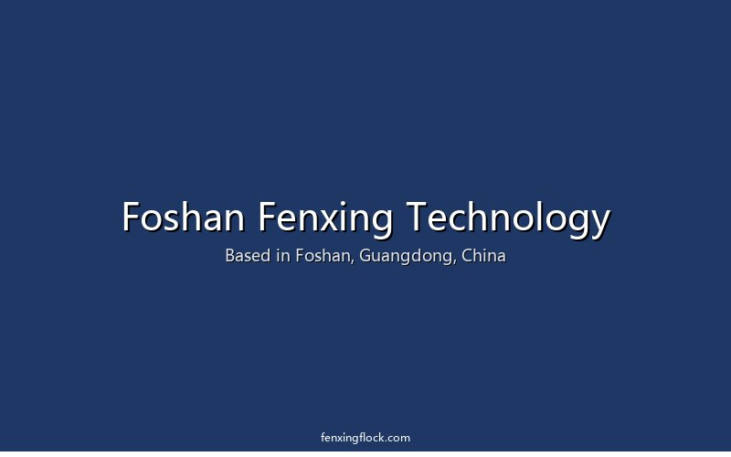
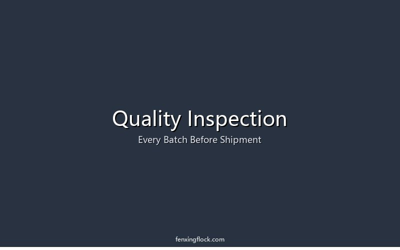

Foshan, Guangdong — the heart of China's manufacturing hub
Foshan Fenxing Technology Co., Ltd. is a material supply-chain service provider deeply rooted in the flocking industry. Through a broad industry network and professional sourcing capability, we deliver one-stop procurement of color pastes, flock fibers, adhesives, chemical raw materials, and flocking equipment.
The materials others can't find, we find. The supply others can't handle, we handle.
We're not just resellers — we understand your production line, your quality standards, and your cost pressures, because we know the flocking process end to end.
The beliefs that guide how we work
Applying flocking-materials expertise to reveal the beauty of flocking. Through professional sourcing and supply-chain capability, we help every fiber show its unique charm.
To become a company serving the global flocking industry — from China to flocking manufacturers everywhere, delivering material supply they can trust.
Dig deep into customer needs, create product value. Beyond supplying products, we're committed to creating measurable business value for our customers.
Understanding flock fiber manufacturing is what sets us apart from ordinary traders.
Nylon, modified polyester, viscose, and black yarn matched to your flocking scenario, each with targeted pre-treatment.
Dry or wet cutting by material, with cut lengths controlled to 0.3–1.5mm for consistent density and hand feel.
Removing surface oils and residue while boosting conductivity, for a clean dyeing base and high-standard cleanliness.
High-temperature, high-pressure dyeing with electro-deposition for conductivity, color fastness, and batch consistency.
Anti-static and conductive treatment for vertical anchoring and even fiber distribution during flocking.
Moisture controlled to standard for conductivity and dispersibility — dry, loose, and clump-free.
Multi-stage vibration sieving removes short fibers, dust, and lumps for uniform fiber length.
Five-dimension quality inspection with batch traceability and a quality report for every batch.
Common flock fiber materials we work with: viscose · nylon · cotton · acrylic · polypropylene
What we promise every customer
0-formaldehyde crosslinkers and other eco-friendly options, ensuring your products meet REACH and international standards — no export compliance worries.
Every incoming batch is strictly inspected with traceable quality reports. We don't just resell — we hold your first quality gate.
Solid technical knowledge means we can guide material selection, process parameters, and common problem-solving.
We pursue long-term partnerships, not one-off deals — from sampling support to bulk supply, we stay by your side.
A simple, transparent process designed around your needs
Tell us what material you need and what you require — specifications, quantity, target price.
We mobilize our resource network to find the best source for your requirement.
Sample and test first — we cooperate only after you're satisfied with the quality.
Build a long-term supply relationship with continuous, quality service.
Whether you're sourcing a hard-to-find material, or need a reliable long-term partner — we're here.
Behind our material expertise is a real supply-chain operation. We consolidate sourcing across a network of vetted factories, stage inventory in our own warehouse, and run a pre-shipment quality gate before anything leaves for your port.
That means you get one partner, one invoice, and one quality standard — instead of chasing multiple suppliers across China. We consolidate your order, inspect it as a single batch, and manage the logistics so it arrives on time and to spec.
Fewer moving parts. Fewer surprises. A supply line you can plan around.

Consolidation and pre-shipment inspection at our Foshan warehouse